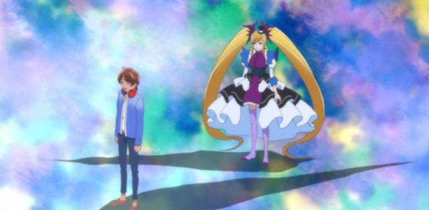

OK... I like experimental animation, and I appreciate going in blind to something surprising. But "18if" would have benefited from a little more preparation.The 2017 anime is technically "part of" a franchise attempt, centered around a mobile game. Animated by Gonzo (the studio behind "Gantz," probably the closest comparison), the story of "18if" is a cross between shows like "The Fruit of Grisaia" and "Bakemonogatari," with "Madoka Magica" and a bit of "Kino's Journey." I'm reaching a bit there, as there's not really anything else like it. The story involves a lead hero in Haruto, a normal and indifferent male teenager. Stuck in a bizarre, abstract dreamworld and unable to wake up, he meets a scientist in the form of a well-dressed cat, and a white-haired "witch" that occasionally offers guidance. Why is he there? Individual girls in the waking world are falling comatose with something called "Sleeping Beauty Syndrome," triggered by some hidden mental stress or trauma in their lives. Transformed into "witches," the dreams of the girls affect themselves and others in the real world. In the connected dream world, Haruto is able to peer into the girls' dreams to uncover the reason behind their trauma, and hopefully, can wake them from it. Meanwhile, Haruto goes back to sleep, only to wake up in the same dreamworld... why can't HE wake up? It's an unusual setting and premise. An overly-experimental first episode doesn't make a great impression with its directing and editing. The first two episodes also suggest that the anime will focus exclusively on violence: episode 1 is about a girl who goes on a dream-murder spree for escapism, and episode 2 is about a girl exacting revenge on the real-life murderers of her family. As things go on, the episodic adventures vary a bit more, running the gambit of issues all girls (or people in general) struggle with. Things like shyness, overeating, stress, peer pressure, bullying, and so on.After that bad first episode, I got used to the core premise, and started to see things to appreciate in "18if" just as often as there was something to complain about. Haruto is about as generic a main character as you can have, for example, and poor writing and acting doesn't do any favors. But he doesn't always save the girl in distress, and doesn't always want to... episode 2 in particular makes him more interesting, if only briefly. And while it's a bit cliche for all the victims of this "sleeping" curse to be women, I appreciated that none of them were sexualized or treated as love interests of a "harem" to Haruto: he helps someone in need, and they move on, not to be seen outside their dedicated episode. To help nail the point home, each episode has a unique ending song, each one a decent track to listen to in your spare time, even if they don't really give the show itself an identity.  There's no doubt that "18if" is ambitious, perhaps too ambitious for its own good, and failing in some fundamental ways. The anime has not one, but 11 episode directors... but the stories don't differ so drastically that their individual voices stand out, and a lack of a consistent vision prevented the show from being greater than the sum of its parts. You would think the dreamworld would inspire some fantastic visuals, but designs of the world and its characters feel lazy, and animation is pretty flat and cheap. It reminded me of "Dragonaut: The Resonance," another Gonzo anime, which also also looked pretty bad when it first aired... compared "18if" to a poor-quality production from 10 years prior isn't a good sign.The one exception is episode 7, directed by Koichi Chigira, which goes for a completely different animation style (stylized CGI) and story (a fairy tale inspired by The Wizard of Oz). Episode 8 (directed by Takaaki Ishiyama) and 10 (series chief director Koji Morimoto) also stand out; 8 focuses on a deaf character and plays with subtitles and sound design accordingly, and 10 has a dynamic animation style and setting that better portrays the "dream" concept than any other episode. This represented to me what "18if" could have been, something more experimental and diverse, like "Space Dandy" but with a greater focus on emotions and philisophy. But the show never really reaches that level.At least the show has a definitive ending for itself... but it leans heavily into "magical idols" (a fragment of the previous episodes), and then develops into something so bizarre, I couldn't believe what I was watching. It's not a good ending, and takes away a bit from the previous episodes being so individual and disconnected.And the English dub... by this point, Funimation had gotten pretty good with their dubs, to the extent that they could knock them out like a factory, lacking in personality in some of these lower-tier anime. And with "18if," it's clear even the actors didn't know exactly what to expect from the show, so it takes a while to find its footing. So yeah, "18if" is weird. Its weirdness is mostly a good thing, but that bad first impression, and poor production values throughout, make it difficult to deny that this simply isn't a good show. About 1/4 of the episodes are worth watching for the style or story, and can be watched independently of the rest of the series. If the rest of the show was able to compare with the best of itself, this could have been incredible.
- "Ani" More reviews can be found at : https://2danicritic.github.io/ Previous review: review_101_Dalmations Next review: review_5_Centimeters_per_Second